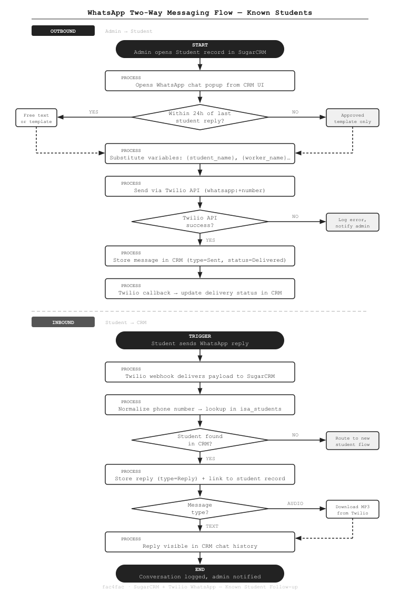

Two-Way WhatsApp Messaging for Existing Students in SugarCRM
How we brought the entire WhatsApp conversation — outbound and inbound — directly inside the CRM, with delivery tracking, templates, and audio support.
The Problem
Staff were managing WhatsApp conversations with students in a completely separate app, then manually updating notes in SugarCRM. There was no record of what was said, no way to use approved message templates from within the CRM, and no visibility into whether messages had actually been delivered.
For teams handling dozens of students at a time, this meant conversations slipped through the cracks and follow-ups were missed.
What We Built
A two-way WhatsApp messaging system embedded directly into SugarCRM. Admins open a student record, click to open the WhatsApp chat popup, and can send messages — free text or pre-approved templates — without leaving the CRM. Every reply the student sends back is automatically captured and linked to their record, creating a full, searchable conversation history inside SugarCRM.
How It Works

Outbound — Admin Sends a Message
- Admin opens the student record and clicks the WhatsApp chat button
- The system checks if a student reply was received in the last 24 hours
- Within the 24-hour window: admin can send a free-form message or choose an approved template
- Outside the window: only approved templates are allowed (WhatsApp Business policy)
- If a template is used, variables like
{student_name},{worker_name}, and{student_city}are substituted automatically - The message is sent via the Twilio API and stored in SugarCRM with a status of Sent
- Twilio sends a delivery callback — the status updates in CRM to Delivered, Failed, or Undelivered
Inbound — Student Replies
- The student replies on WhatsApp from their phone
- Twilio delivers the message to the SugarCRM webhook
- The system normalizes the phone number and matches it to a student record in
isa_students - If matched → the reply is stored and linked to the student (type: Reply)
- If the reply is an audio/voice message → the file is downloaded from Twilio, saved as MP3, and displayed with an audio player in the CRM chat view
- If the phone is not matched → routed to the new student onboarding flow
Key Technical Decisions
- 24-hour messaging window enforcement. WhatsApp Business rules restrict free-form messages to within 24 hours of a customer reply. The system automatically checks the timestamp of the last inbound message and switches the UI to template-only mode when the window has expired — no admin training required.
- Template variable substitution. Templates can include dynamic placeholders mapped to student and worker fields in SugarCRM. The system resolves them before calling the Twilio API, so every student gets a personalized message from a single template definition.
- Audio message support. When a student sends a voice message, the system downloads the audio file from Twilio and stores it locally, then surfaces it as an inline audio player inside the SugarCRM chat view. No external links, no extra clicks.
- Bulk messaging. Admins can send a single message (or template) to multiple students at once from the student list view. The system loops through selected records, resolves each student's variables, and sends individually via Twilio.
- Phone number normalization. Incoming webhooks from Twilio carry international-format numbers. The system normalizes both the stored CRM number and the incoming number before matching, handling Israeli (+972), US (+1), and Vietnamese (+84) formats consistently.
What Changed
- Admins send and receive WhatsApp messages without leaving SugarCRM
- Full conversation history — text and audio — is stored against each student record
- Delivery status (sent, delivered, failed) is visible directly in the CRM
- The 24-hour template rule is enforced automatically — no risk of policy violations
- Bulk messaging to multiple students is a single action from the list view
Stack
Need WhatsApp integrated into your CRM workflow? Get in touch →